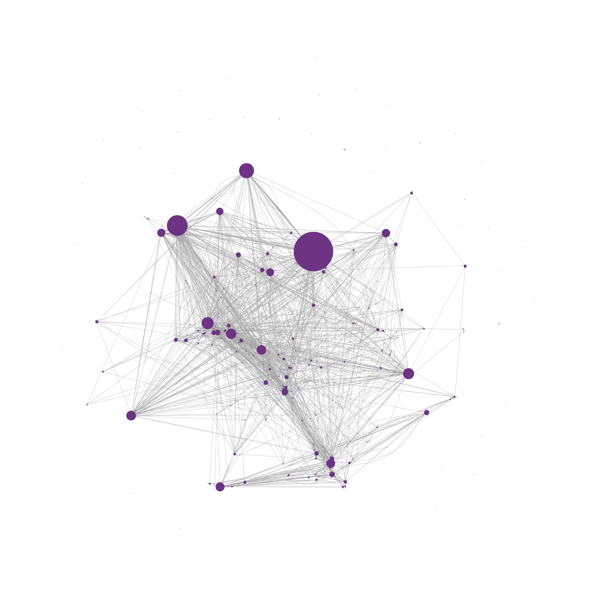
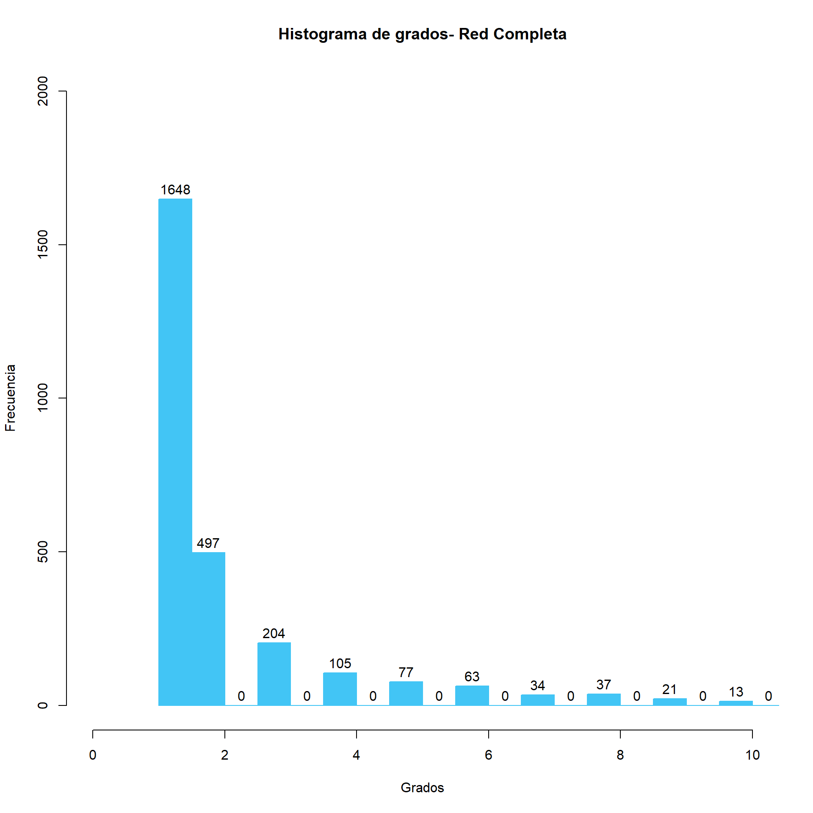
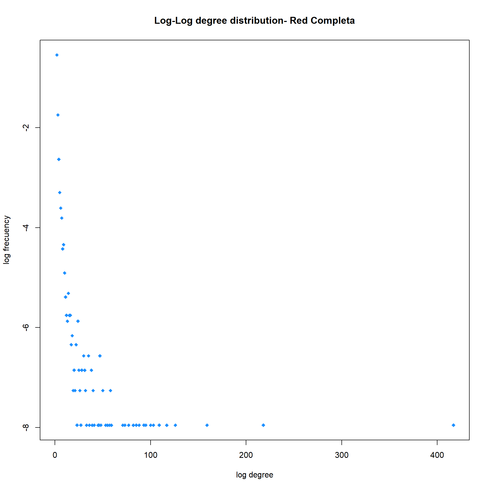
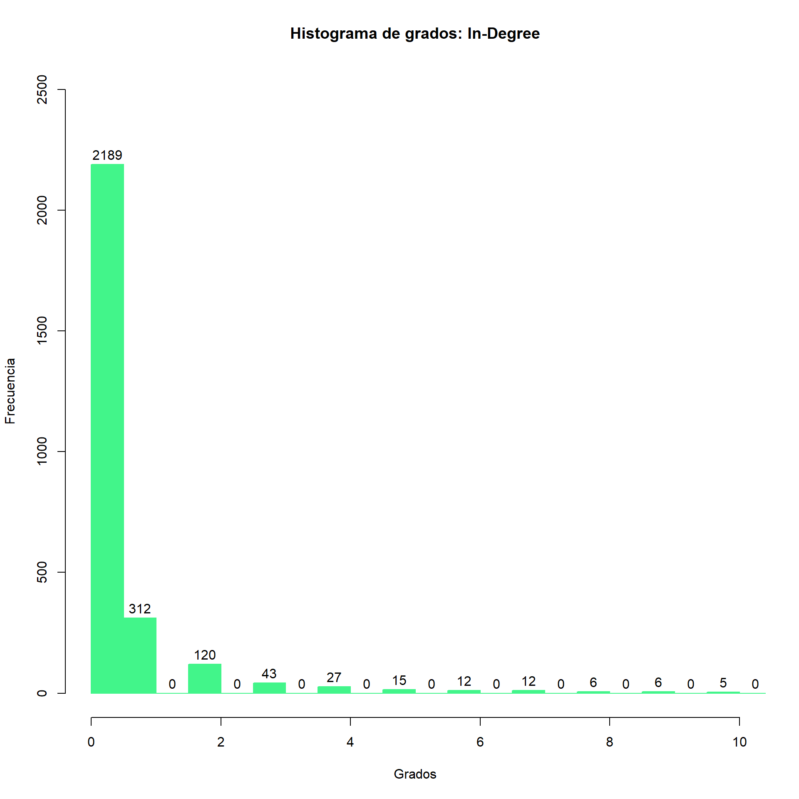
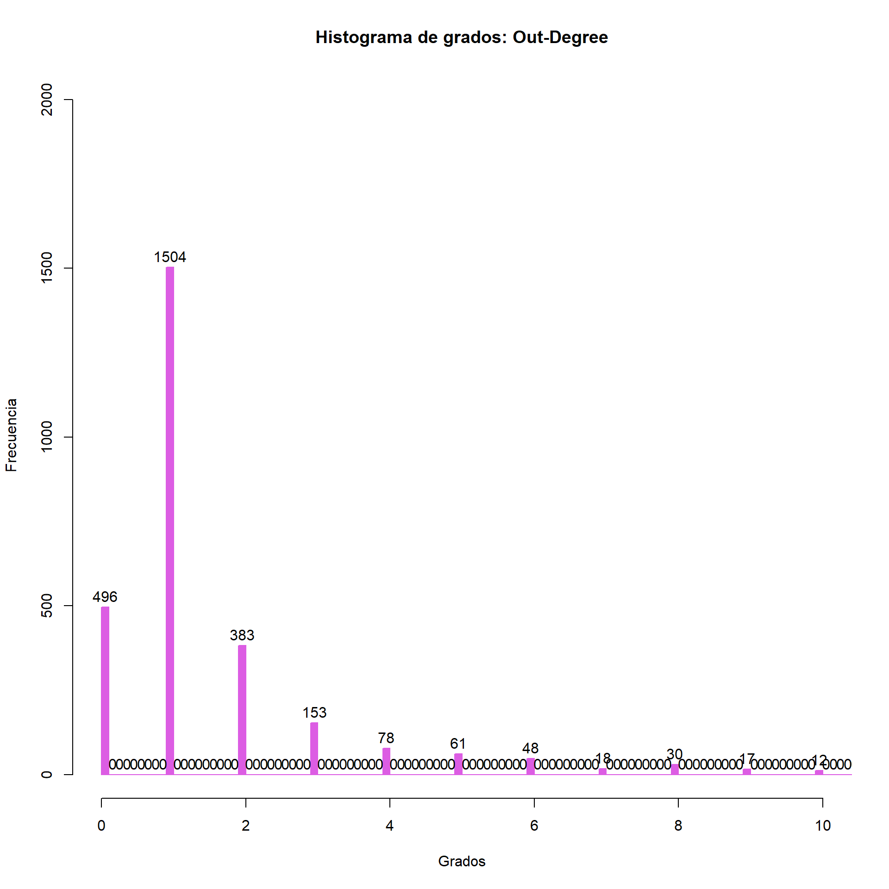
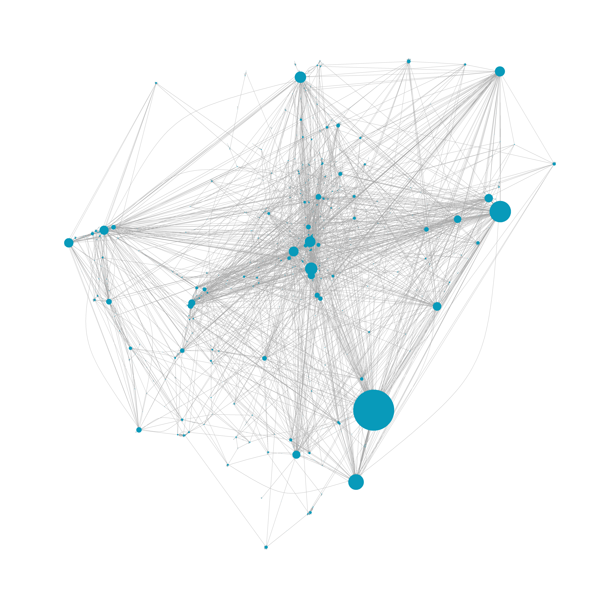
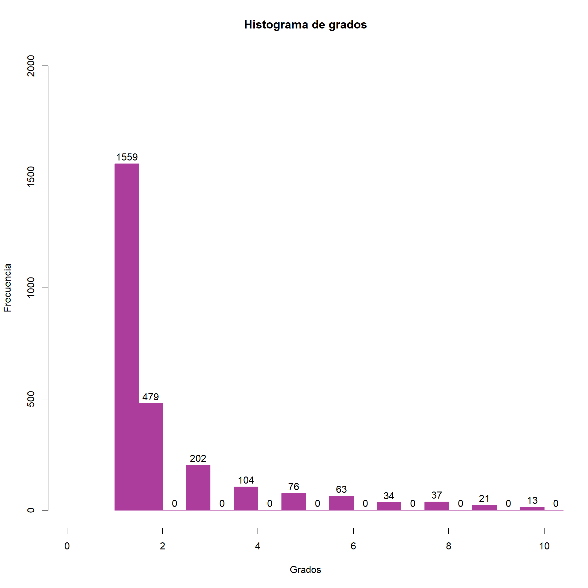
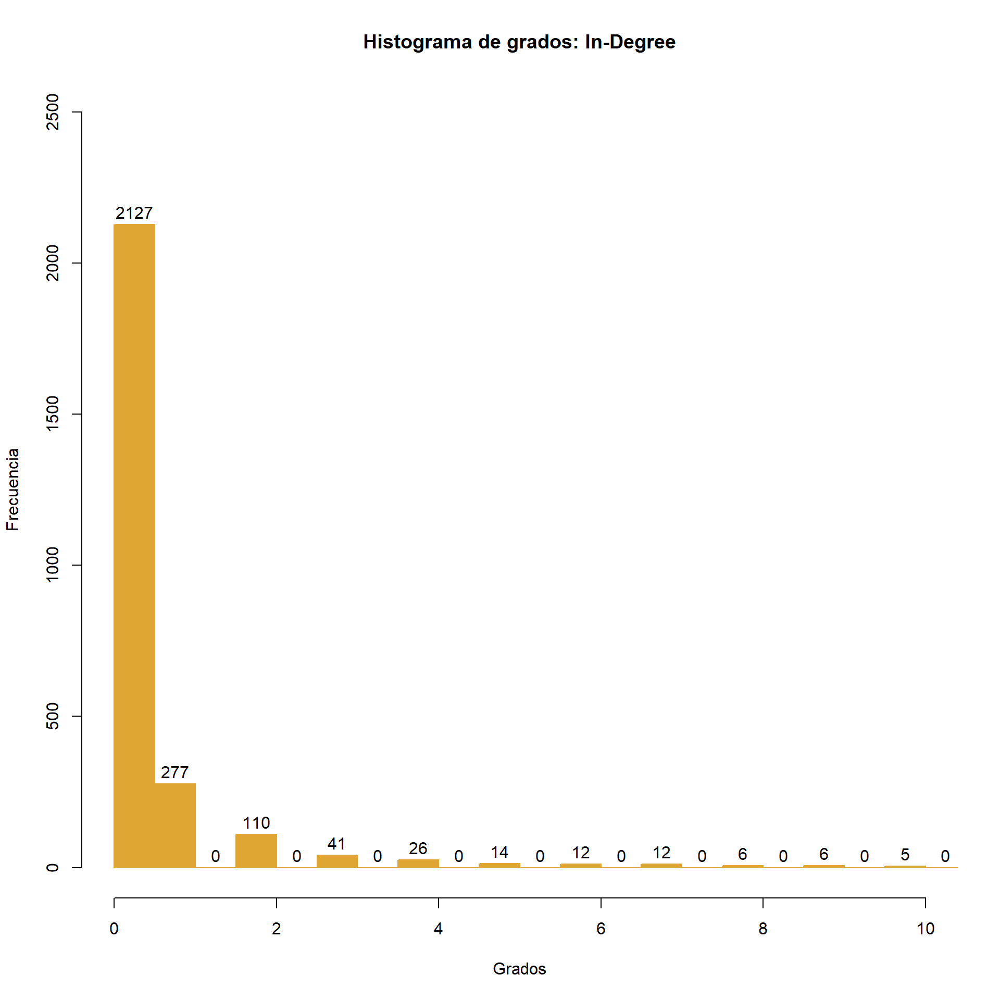
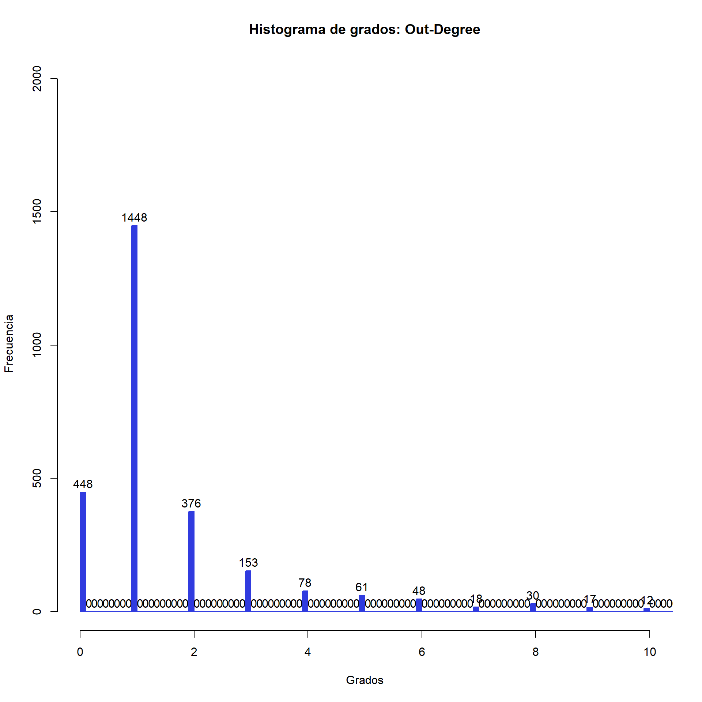

 Nuevamente, el componente principal refleja la concentración de nodos con grados bajos. En este sentido existen 1559 nodos de grado 1.


Al realizar el análisis de triadas del componente principal,no cambia demasiado del realizado con la red completa, como era de esperarse. En este sentido el componente principal cuenta con 15985 triadas de tipo A<-B->C, 195799 de tipo A->B<-C, 1506 de tipo A->B->C, 1 de tipo A<->B->C, 578 de tipo A->B<-C, A->C, 57 de tipo A<-B->C, A<->C, 17 de tipo A->B<-C, A<->C y 1 de tipo A<->B<->C, A<->C.